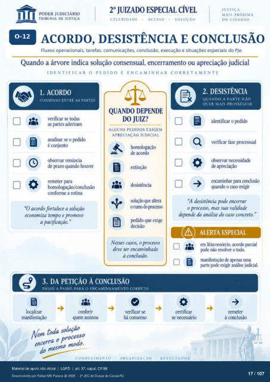

Transcrição automática em português, ainda não revisada. Confira grafia, prazos e termos jurídicos na imagem e no PDF antes de utilizar.
1
ACORDO, DESISTÊNCIA E CONCLUSÃO
Fluxos operacionais, tarefas, comunicações. conclusão, execução e situações especiais do PJe. Quando a árvore indica solução consensual, encerramento ou apreciação judicial
IDENTIFICAR O PEDIDO E ENCAMINHAR CORRETAMENTE
1. ACORDO
CONSENSO ENTRE AS PARTES
verificar se todas as partes aderiram
analisar se o Fdido é conjunto
observar renúncia de prazo quando
remeter para homologação/conclusão
a rotina ¯x
a
QUANDO DEPENDE
DO JUIZ?
ALGUNS PEDIDOS EXIGEM
APRECIAÇÃO JUDICIAL
homologação de acordo
desistência solução que altera
o rumo do Fdido que exige
Nesses casos, o processo deve ser encaminhado
à conclusão. Q
2. DESISTÊNCIA
QUANDO A PARTE NÃO
QUER MAIS PROSSEGUIR
identificar o Fdido verificar prcxessual
observar necessidade de apreciação
encaminhar Pira conclusão quando o caso exigir
"O acordo fortalece a solução economiza tempo e promove
a pacificação. " "A desistência pode
o processo, mas sua validade depende da análise do caso concreto. "
ALERTA ESPECIAL
em litisconsórcio, acordo parcial Bxle não resolver o
manifestação de aFnas uma parte yxle exigir análise judicial.
3. DA PETIÇÃO À CONCLUSÃO
PASSO A PASSO PARA O ENCAMINHAMENTO CORRETO
Icx:alizar manifestação
cmferir quem assinou
verificar se há consenso
x N t ZAC\O
necessário Ment toda solução
à conclusão
Ver também o infográfico original (página 17)
